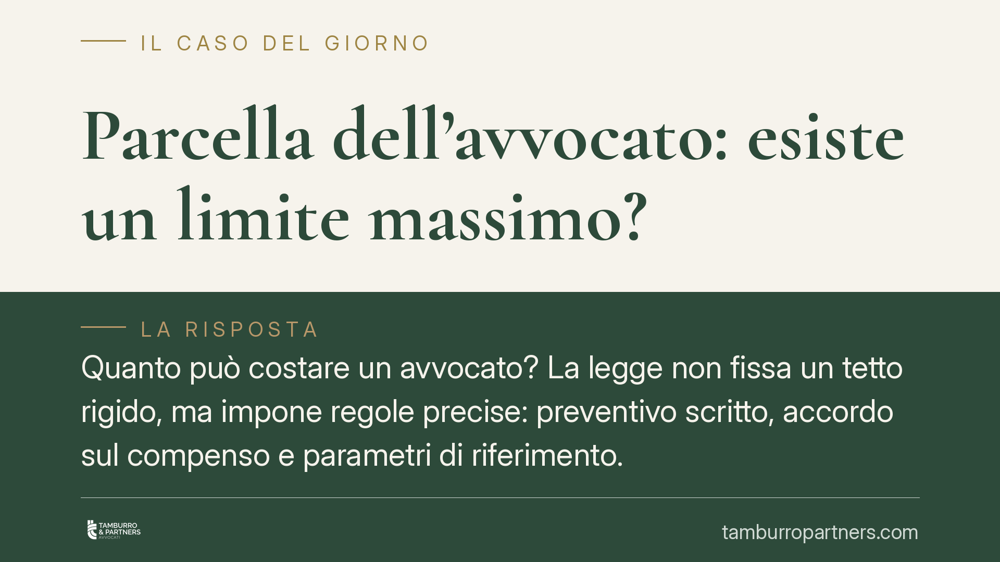

Parcella dell'avvocato: esiste un limite massimo?
Quanto può costare un avvocato? La legge non fissa un tetto rigido, ma impone regole precise: preventivo scritto, accordo sul compenso e parametri di riferimento. Capire questo quadro serve al cliente per orientarsi e al professionista per operare in modo trasparente. Ecco cosa prevede l'ordinamento e come muoversi in concreto.

Il fatto: un limite che non è un tetto
Una domanda ricorrente è se esista un importo massimo oltre il quale la parcella dell'avvocato diventi illegittima. La risposta è articolata: non c'è un tetto numerico fissato per legge, ma esistono vincoli formali e sostanziali che limitano la discrezionalità del professionista e proteggono il cliente da richieste sproporzionate.
Il compenso, in altre parole, è tendenzialmente libero nella sua determinazione, ma non arbitrario. La sua legittimità dipende dal rispetto di obblighi di trasparenza e da criteri di proporzionalità rispetto all'attività effettivamente svolta.
Inquadramento normativo
Il punto di partenza è il codice civile. L'art. 2233 stabilisce che il compenso del professionista, se non è convenuto dalle parti e non può determinarsi secondo le tariffe o gli usi, è stabilito dal giudice. La stessa norma impone che la misura del compenso sia comunque adeguata all'importanza dell'opera e al decoro della professione. L'art. 2230 inquadra invece il rapporto come contratto d'opera intellettuale.
La svolta è arrivata con il Decreto Cresci-Italia (DL 1/2012), che ha abolito le tariffe minime obbligatorie. Da quel momento il compenso è liberamente pattuibile tra avvocato e cliente. In assenza di accordo, o in sede giudiziale di liquidazione, entrano in gioco i parametri ministeriali, oggi contenuti nel DM 55/2014 (che ha superato il precedente DM 140/2012): non sono tariffe vincolanti, ma valori di riferimento graduati per fasi del giudizio e scaglioni di valore.
La Legge professionale forense (L. 247/2012) completa il quadro imponendo un obbligo centrale: l'avvocato deve rendere noto al cliente, all'atto del conferimento dell'incarico, il grado di complessità della pratica e comunicare per iscritto, se richiesto o comunque in modo trasparente, la prevedibile misura del compenso. È il cosiddetto preventivo, che oggi rappresenta lo snodo pratico più rilevante.
Implicazioni pratiche
Per il cliente, questo significa che il vero strumento di controllo non è un limite astratto, ma l'accordo iniziale. Un compenso concordato per iscritto, chiaro nelle voci e negli importi, riduce drasticamente il rischio di contestazioni successive.
In mancanza di un patto scritto, la parcella non diventa illimitata: dovrà comunque agganciarsi ai parametri ministeriali e al principio di proporzionalità dell'art. 2233. Un compenso manifestamente sproporzionato rispetto all'attività svolta può essere contestato e, in sede giudiziale, ridotto.
È utile distinguere due situazioni. Quando c'è un accordo valido, quello prevale e vincola entrambe le parti. Quando l'accordo manca o è nullo, si applicano i parametri come criterio di liquidazione. Il patto sul compenso, inoltre, incontra il divieto del cosiddetto patto di quota lite nella sua forma vietata: non è ammesso pattuire come compenso una quota del bene oggetto della lite intesa come cessione di diritti, mentre resta possibile parametrare l'onorario al risultato entro i limiti deontologici.
Per il professionista, la trasparenza non è solo un obbligo deontologico: è la migliore tutela contro contenziosi sul compenso e contestazioni disciplinari.
Cosa fare in concreto
- Richiedi sempre il preventivo scritto prima di conferire l'incarico: deve indicare le voci di attività e la prevedibile misura del compenso.
- Verifica se il compenso è a forfait, a fasi o a ore e chiedi come vengono gestite spese, contributi e attività non preventivate.
- Conserva l'accordo e ogni comunicazione sul compenso: in caso di contestazione, la forma scritta è decisiva.
- Se ricevi una parcella che ritieni eccessiva, chiedi la nota dettagliata delle attività e confrontala con i parametri del DM 55/2014.
- In caso di disaccordo, valuta il procedimento per la liquidazione giudiziale del compenso prima di ogni pagamento contestato.
In sintesi
Non esiste un importo massimo fissato dalla legge, ma esistono argini solidi: obbligo di preventivo, prevalenza dell'accordo scritto, parametri di riferimento e principio di proporzionalità. Il modo più efficace per evitare sorprese è definire tutto all'inizio, in forma chiara e documentata.
Contributo informativo a cura di Tamburro & Partners - Avv. Giuseppe Tamburro. Non costituisce parere legale.
Ogni contratto ha il suo equilibrio.
Se vuoi una revisione delle clausole o una redazione su misura, scrivi allo studio. Ti rispondiamo entro un giorno lavorativo.